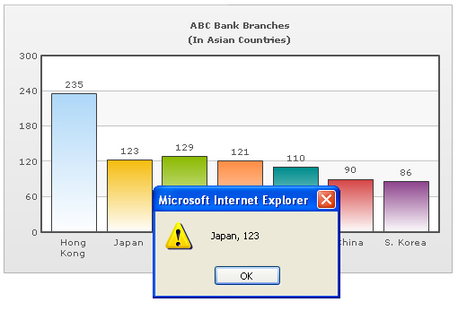

| Using JavaScript functions as links |
|
Instead of using simple links, you can also set JavaScript links using FusionCharts XT. That is, you can invoke a JavaScript function present in the same page (in which the chart is present) when the end viewer clicks a data element on the chart. FusionCharts XT provides two ways of setting JavaScript functions as links:
Advanced Note: Syntax of JavaScript links having J- prefix Let us quickly put up an example for these kind of links. We will create a simple 2D Column chart indicating "ABC Bank Branches" in Asia. Each column when clicked will pass its label and value to our custom JavaScript function myJS, which (for the sake of demonstration) will just write it out in an alert box. We create JSExample.html for this example in DrillDown folder. It contains the following HTML code: |
<html>
<head>
<title>JavaScript Link Example</title>
<script language="JavaScript" src="../FusionCharts/FusionCharts.js"></script>
<SCRIPT LANGUAGE="JavaScript"><!--
function myJS(myVar){
window.alert(myVar);
}
// --></SCRIPT>
</head>
<body bgcolor="#ffffff">
<div id="chartdiv" align="center">The chart will appear within this DIV. This text will be replaced by the chart.</div>
<script type="text/javascript"><!--
var myChart = new FusionCharts("../FusionCharts/Column2D.swf",
"myChartId", "500", "300", "1",
"1");
myChart.setXMLUrl("JSExample.xml");
myChart.render("chartdiv");
// --></script>
</body>
</html>
See it live! |
|
Here, we have defined a function myJS
which will respond to the clicks generated from the chart. Additionally, it is important to set the registerWithJS attribute in constructor to 1 (the last attribute in the line which initializes a FusionCharts XT chart in the page).
Let us see how the function can be called using the two methods of defining JavaScript links: |
| Using j- in JavaScript link |
|
And now, JSExample.xml looks as under: |
<chart caption='ABC Bank Branches' subCaption='(In
Asian Countries)' yaxislabel='Branches' xaxislabel='Country'>
<set label='Hong Kong' value='235' link='j-myJS-Hong Kong, 235'/>
<set label='Japan' value='123' link='j-myJS-Japan, 123'/>
<set label='Singapore' value='129' link='j-myJS-Singapore, 129'/>
<set label='Malaysia' value='121' link='j-myJS-Malaysia, 121'/>
<set label='Taiwan' value='110' link='j-myJS-Taiwan, 110'/>
<set label='China' value='90' link='j-myJS-China, 90'/>
<set label='S. Korea' value='86' link='j-myJS-S.Korea, 86'/>
</chart>
|
As you can see above, for each data item, we have defined a JavaScript link that points to the custom function myJS. To this function, we are passing the name and value of the data item. When you view the chart and click on a column, you will see something like under: |
|  |
| See it live! |
Note: The above mentioned way of using JavaScript functions as links is supported by all the major browsers. |
| Using JavaScript: in JavaScript link |
Using this method, the JSExample.xml will look like this: |
<chart caption='ABC Bank Branches' subCaption='(In
Asian Countries)' yaxislabel='Branches' xaxislabel='Country'>
<set label='Hong Kong' value='235' link="JavaScript:myJS('Hong Kong,235');"/>
<set label='Japan' value='123' link="JavaScript:myJS('Japan, 123');"/>
<set label='Singapore' value='129' link="JavaScript:myJS('Singapore, 129');"/>
<set label='Malaysia' value='121' link="JavaScript:myJS('Malaysia, 121');"/>
<set label='Taiwan' value='110' link="JavaScript:myJS('Taiwan, 110');"/>
<set label='China' value='90' link="JavaScript:myJS('China, 90');"/>
<set label='S. Korea' value='86' link="JavaScript:myJS('S.Korea, 86');"/>
</chart>
|
As you can see above, for each data item, we used JavaScript:, instead of j-, which points to the custom function myJS, and the function call is written exactly like JavaScript notation. Apart from this, everything else remains same. |
| Note: In certain rare cases after chart export, Internet Explorer fails to invoke JavaScript functions as links using this method. So we recommend using j- method. |
|
Note: Internally the chart decodes a URL that you set as link. Before invoking the link it again encodes the URL. If you are passing multilingual characters via a URL or do not want this decode-encode mechanism to be handled by chart, you can set unescapeLinks='0' in <chart> element of the chart's XML data. If you are using JSON data, you need to use { "chart" : { "unescapeLinks" : "0" ... } ... } . |